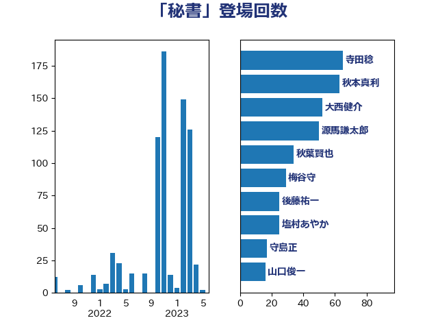

単語「秘書」

| 大西健介 | 立憲民主党 | 28 回 |
| 福山哲郎 | 立憲民主党 | 27 回 |
| 山口俊一 | 自由民主党 | 11 回 |
| 打越さく良 | 立憲民主党 | 8 回 |
| 篠原孝 | 立憲民主党 | 7 回 |
| 大岡敏孝 | 自由民主党 | 6 回 |
| 菅義偉 | 自由民主党 | 6 回 |
| 加藤勝信 | 自由民主党 | 5 回 |
| 熊谷裕人 | 立憲民主党 | 5 回 |
| 福岡資麿 | 自由民主党 | 5 回 |
| 足立康史 | 日本維新の会 | 5 回 |
| 辻元清美 | 立憲民主党 | 5 回 |
| 金田勝年 | 自由民主党 | 5 回 |
| 佐藤英道 | 公明党 | 4 回 |
| 奥下剛光 | 日本維新の会 | 4 回 |
| 山添拓 | 日本共産党 | 4 回 |
| 新谷正義 | 自由民主党 | 4 回 |
| 細田博之 | 自由民主党 | 4 回 |
| 高橋克法 | 自由民主党 | 4 回 |
| 中谷一馬 | 立憲民主党 | 3 回 |
| 宮本徹 | 日本共産党 | 3 回 |
| 近藤和也 | 立憲民主党 | 3 回 |
| 丹羽秀樹 | 自由民主党 | 2 回 |
| 天畠大輔 | れいわ新選組 | 2 回 |
| 奥野総一郎 | 立憲民主党 | 2 回 |
| 小熊慎司 | 立憲民主党 | 2 回 |
| 小野泰輔 | 日本維新の会 | 2 回 |
| 山岡達丸 | 立憲民主党 | 2 回 |
| 山東昭子 | 自由民主党 | 2 回 |
| 平井卓也 | 自由民主党 | 2 回 |
| 本庄知史 | 立憲民主党 | 2 回 |
| 東徹 | 日本維新の会 | 2 回 |
| 枝野幸男 | 立憲民主党 | 2 回 |
| 櫻井周 | 立憲民主党 | 2 回 |
| 玉木雄一郎 | 国民民主党 | 2 回 |
| 石川大我 | 立憲民主党 | 2 回 |
| 福島伸享 | 無所属 | 2 回 |
| 竹谷とし子 | 公明党 | 2 回 |
| 藤岡隆雄 | 立憲民主党 | 2 回 |
| 長坂康正 | 自由民主党 | 2 回 |
| 長浜博行 | 無所属 | 2 回 |
| 青柳陽一郎 | 立憲民主党 | 2 回 |
| 須藤元気 | 無所属 | 2 回 |
| 高木毅 | 自由民主党 | 2 回 |
| 中谷真一 | 自由民主党 | 1 回 |
| 五十嵐清 | 自由民主党 | 1 回 |
| 伊藤岳 | 日本共産党 | 1 回 |
| 古賀之士 | 立憲民主党 | 1 回 |
| 坂井学 | 自由民主党 | 1 回 |
| 塩川鉄也 | 日本共産党 | 1 回 |
| 大家敏志 | 自由民主党 | 1 回 |
| 太栄志 | 立憲民主党 | 1 回 |
| 宮本岳志 | 日本共産党 | 1 回 |
| 寺田学 | 立憲民主党 | 1 回 |
| 小川淳也 | 立憲民主党 | 1 回 |
| 小渕優子 | 自由民主党 | 1 回 |
| 小西洋之 | 立憲民主党 | 1 回 |
| 尾辻秀久 | 無所属 | 1 回 |
| 山田賢司 | 自由民主党 | 1 回 |
| 岡本あき子 | 立憲民主党 | 1 回 |
| 工藤彰三 | 自由民主党 | 1 回 |
| 後藤祐一 | 立憲民主党 | 1 回 |
| 斎藤アレックス | 国民民主党 | 1 回 |
| 斎藤嘉隆 | 立憲民主党 | 1 回 |
| 早稲田ゆき | 立憲民主党 | 1 回 |
| 本村伸子 | 日本共産党 | 1 回 |
| 杉尾秀哉 | 立憲民主党 | 1 回 |
| 松木けんこう | 立憲民主党 | 1 回 |
| 柚木道義 | 立憲民主党 | 1 回 |
| 梅村みずほ | 日本維新の会 | 1 回 |
| 梅谷守 | 立憲民主党 | 1 回 |
| 森山浩行 | 立憲民主党 | 1 回 |
| 武田良太 | 自由民主党 | 1 回 |
| 池畑浩太朗 | 日本維新の会 | 1 回 |
| 泉田裕彦 | 自由民主党 | 1 回 |
| 浅田均 | 日本維新の会 | 1 回 |
| 浅野哲 | 国民民主党 | 1 回 |
| 浜野喜史 | 国民民主党 | 1 回 |
| 田村智子 | 日本共産党 | 1 回 |
| 羽田次郎 | 立憲民主党 | 1 回 |
| 舩後靖彦 | れいわ新選組 | 1 回 |
| 若宮健嗣 | 自由民主党 | 1 回 |
| 若松謙維 | 公明党 | 1 回 |
| 萩生田光一 | 自由民主党 | 1 回 |
| 藤田文武 | 日本維新の会 | 1 回 |
| 西村智奈美 | 立憲民主党 | 1 回 |
| 西銘恒三郎 | 自由民主党 | 1 回 |
| 逢坂誠二 | 立憲民主党 | 1 回 |
| 野上浩太郎 | 自由民主党 | 1 回 |
| 長妻昭 | 立憲民主党 | 1 回 |
| 青木愛 | 立憲民主党 | 1 回 |
| 高野光二郎 | 自由民主党 | 1 回 |